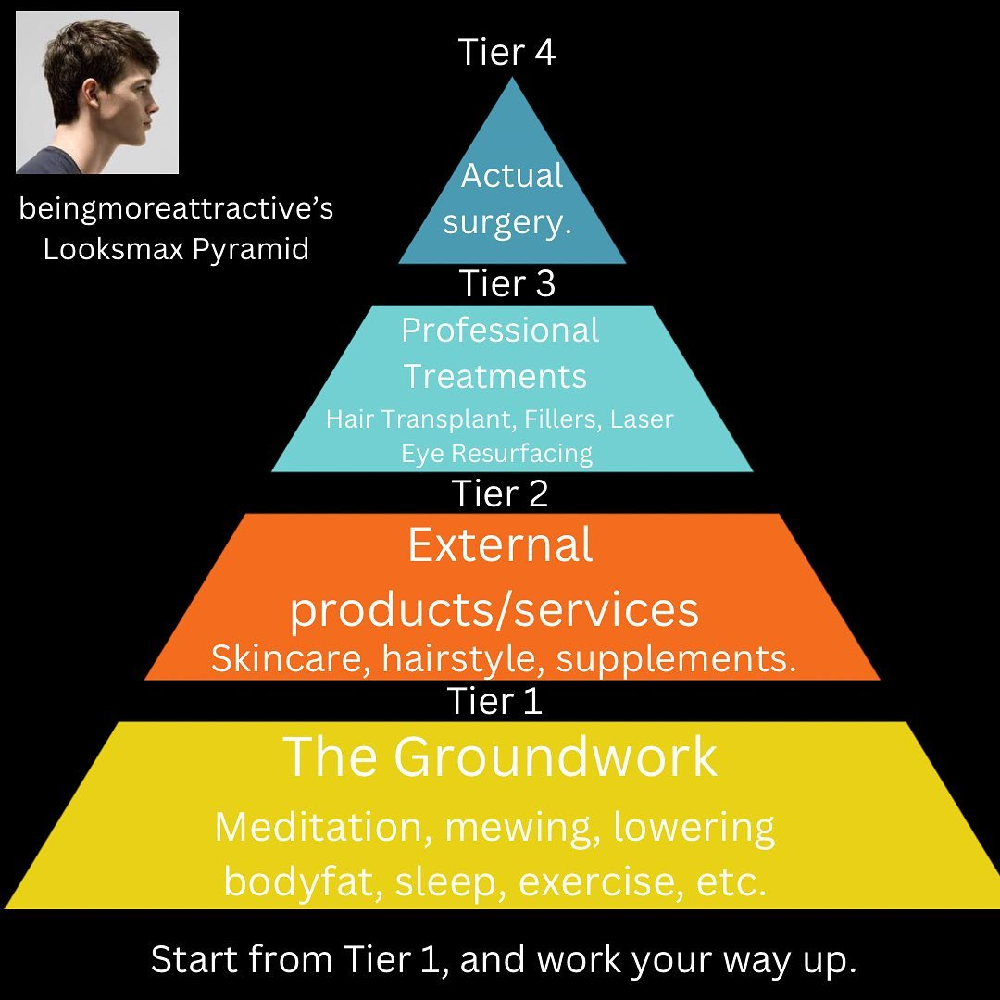

4.0 - Appearance Matters
"The difference between good and bad criminals depends on how well they were dressed. It depends on what weapon they used. It depends on their posture, their voice, their plan of attack. It depends on how they carried themselves. It depends on how they carried it out. It depends on their height, their bone structure, their body fat percentage, their haircut. It depends on who their victim was. Even the very worst of criminal acts are forgiven by simply looking good. Or cool. Or interesting, in some way." - Mike Ma
4.1 - Why Should I Care?
The Halo effect influences every social action you take. Everyone has a subconscious appreciation of beauty and is naturally biased towards specific some physical aspects of a person. For instance, in men, a square jawline will always be seen as attractive. Generally, people have a cognitive bias along the lines of "that which is beautiful is also good". Studies find that when we rate people as attractive, we tend to believe that they have positive personality traits and are more intelligent. One study found that jurors were less likely to believe that attractive people were guilty of criminal behavior.
Some studies to look up on the impact of appearance:
- What Is the Halo Effect?
- The “halo effect”: The effects of criminal offenders’ physical attractiveness
- Do Ugly Criminals Receive Harsher Sentences? An Analysis of Lookism in the Criminal Justice System
We are social beings, and we like it when others perceive us in a positive light. When you look good, people think better of you.
“If you look good, you feel good, and if you feel good, you do good.” - Georges St-Pierre
4.2 - Looksmaxxing
Looksmaxxing is any attempt at improving one's appearance. Looksmaxxing can be pursued in a wide variety of ways, from getting a new haircut to using steroids. These two varieties of techniques are considered "softmaxxing" and "hardmaxxing" respectively. In this guide, I will only cover softmaxxing as hardmaxxing is often costly, invasive, and honestly beyond the scope of this website.
4.3 - Tier 0 | The Basics
This is Tier 0, the level at which everyone should operate. These are some basic techniques that everyone should be doing regardless of situation. I am assuming that you are already doing all of these, and this is only here for the sake of clarity.
On a daily basis:
- Showering. I prefer a morning cold shower to get my blood pumping. Cold showers improve discipline and can lead to healthier skin and hair. Shampoo strips the natural oils from your hair so use it sparingly, once a week at most.
- Washing face. Every morning and night I wash my face with some generic foaming facial cleanser. Then, I apply moisturizer and acne cream.
- Teeth. Teeth care is important. Brush your teeth twice a day. I like to floss every morning and every night. Every six months, I use Crest 3DWhitestrips Professional Effects Teeth Whitening Strips to whiten my teeth. They're expensive but they work phenomenally.
- Grooming. If you can't grow a full beard or mustache, shave it every day or two. Unkempt facial hair is ugly. After you get out of the shower, playing with your hair for a couple minutes to make it sit right can make a big difference.
- Outdoors. Vitamin D plays a significant role in your immune system and mood regulation. Also getting a tan looks good. I aim to be outdoors in the sun for a minimum of an hour a day.
- Physical activity. It's important to be physically active every day. Whether that's through lifting, running, sports, or walking, just do something. I aim to get at least an hour of physical activity every day.
On a weekly basis:
- Clipping nails. Not much to say here. I usually leave a little of the white part at the end of my nails.
- Cleaning ears. Use cotton swabs to clear out your earwax. Be careful not to push earwax over your eardrum.
Other than that, get a haircut regularly. If you like your hairstyle, get your ends trimmed at least every month or two. This website has some great hair inspiration photos and fashion infographics.
4.4 - Tier 1 | The Groundwork
https://vid.puffyan.us/watch?v=4sXkXeKAxIM
4.5 - Tier 2 | External Products
4.6 - Fashion
"The clothes make the man." - Erasmus